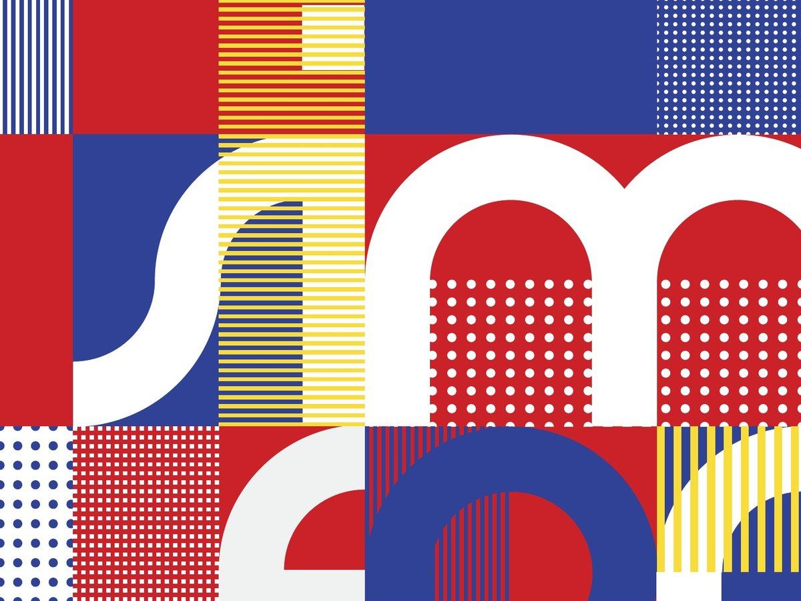
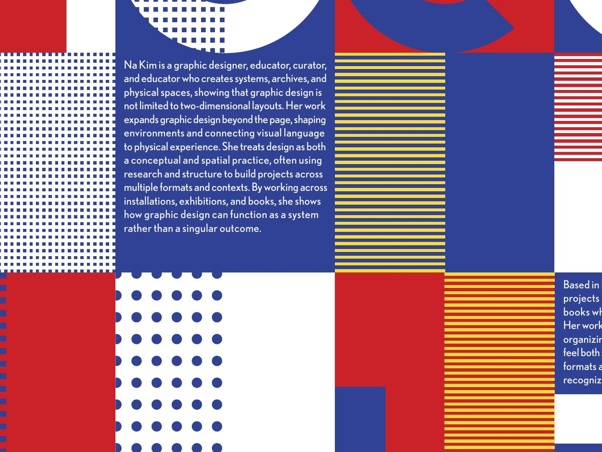

Color
Bright primary colors
Red, blue, and yellow, often paired with black and white.
Details
Role: Designer (individual project)
Timeline: Spring 2026
Course: Sophomore C Studio, Carnegie Mellon School of Design
Deliverables: Poster, Booklet, Motion piece
Tools: Illustrator, InDesign, After Effects
Summary
Design Hero is a three-part project inspired by Na Kim, a graphic designer, artist, curator, and educator based in Berlin and active in Seoul. I created a typographic poster, a 16-page booklet, and a motion piece that introduce her work through a consistent visual language inspired by her design approach.

Overview
Who is Na Kim?
Na Kim is a graphic designer whose work spans publications, exhibitions, installations, and spaces. She often uses collecting, arranging, and organizing as part of her creative process, drawing inspiration from everyday objects, experiences, and memories.
I chose Na Kim as my design hero because I admire how her work feels recognizable even across different mediums. I also like how she uses simple shapes and structured layouts to express personal ideas. As a designer, I hope to develop my own visual style that feels just as consistent while still allowing me to explore different kinds of work.
Research
I started by collecting references of Na Kim’s work and organizing them into categories, including publications, installations, spaces, products, and exhibitions. Through this research, I identified two recurring visual elements that became the foundation for my designs.
Color
Red, blue, and yellow, often paired with black and white.
Shape
Repeated squares, circles, triangles, stars, and diamonds, often arranged in grids.
Poster
Typographic poster · 17.5 × 28 in
For the poster, I created a lowercase typeface using only circles and rectangles, inspired by the geometric shapes commonly found in Na Kim’s work.
I arranged the letters within a 5 × 8 grid of 3.5-inch squares to spell out “simple form, complex idea,” a simplified version of a quote from Na Kim that reflects her design approach.
To add variation while keeping the composition consistent, I filled the remaining squares with dots, lines, and patterns. I also experimented with the balance between the letters and background patterns to make sure the text remained readable.



Booklet
16-page booklet · 8.25 × 10.5 in
I designed a 16-page booklet to introduce Na Kim’s background and the range of her work. It begins with a short introduction and timeline, followed by sections on her print, space, and product design, LOOM (her home, gallery, and studio in Berlin), and her exhibitions.
I used a consistent three-column grid, a combination of Futura and Instrument Serif, and a different primary color for each spread. Numbered captions help organize the content, while the layouts leave enough space for her work to stand out.
For the covers, I reused the squares and quarter-circle shapes from the poster and combined them with black-and-white images of her objects to connect the two pieces visually.
Cover

Motion
Type-based video · 1:12
For the motion piece, I used an excerpt from a Korean interview in which Na Kim discusses collecting and its connection to memory. I translated her words into English and used them as the voiceover, with animated typography following the narration.
I combined typography, footage, and geometric shapes to reflect the ideas in her words and create natural transitions between them.
Reflection
01 · Poster: designing with type
02 · Booklet: creating consistency across pages
03 · Motion: finding the right pacing